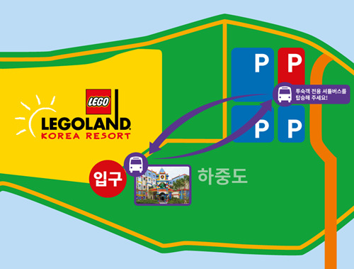
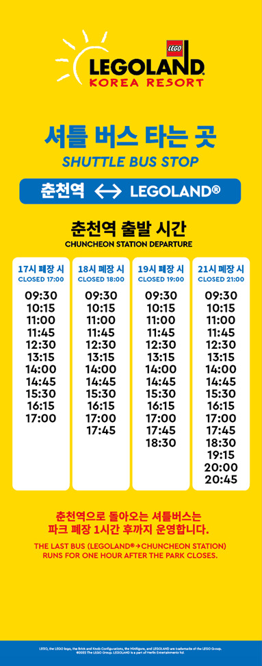

LEGOLAND® 코리아는 강원 춘천시 하중도길 128 에 위치합니다.
[지하철]
- 경춘선 타고 춘천역까지 오세요!
- 춘천역 1번 출구에서 레고랜드 전용 셔틀버스(무료)를 운영중에 있어요. (아래 '셔틀버스(무료)' 에 배차 시간 확인)
[기차]
- ITX청춘 타고 춘천역까지 오세요!
- 춘천역 1번 출구에서 레고랜드 전용 셔틀버스(무료)를 운영중에 있어요. (아래 '셔틀버스(무료)' 에 배차 시간 확인)
* 레고랜드 전용 셔틀버스(무료)의 운행 시간은 도로 및 현장 상황에 따라 변동될 수 있습니다.
[서울 출발]
- 고속버스 :
서울고속버스터미널 승차 ⇀ 춘천고속버스터미널 하차 (약 1시간 30분 소요)
⇀ 춘천우체국에서 100-1 버스 승차 ⇀ 춘천역육교앞 하차 (10개 정류장 이동, 약 8분 소요)
⇀ ① 레고랜드 셔틀버스(무료) 탑승 (아래 '셔틀버스(무료)' 에 배차 시간 확인)
또는 ② 레고랜드 코리아 리조트로 도보 이동(2.7km, 약 43분 소요)
* 상기 운행정보는 버스 사정에 따라 변경될 수 있습니다.
* 레고랜드 전용 셔틀버스(무료)의 운행 시간은 도로 및 현장 상황에 따라 변동될 수 있습니다.
- LEGOLAND® 코리아는 강원 춘천시 하중도길 128 에 위치합니다.
- 주차장 ↔ 정문간 셔틀버스(무료)가 운행됩니다. (아래 '셔틀버스(무료)' 에 배차 시간 확인)
* 레고랜드 전용 셔틀버스(무료)의 운행 시간은 도로 및 현장 상황에 따라 변동될 수 있습니다.
* 주차장 요금 : 2022년 7월 1일부터 해당 요금으로 주차장이 운영됩니다.
단, 2023년 1월 16일 ~ 3월 15일까지 (오전 9시~오후 7시) 주차장을 무료로 이용하세요!
시간 |
주차요금 (KRW) |
1시간 |
Free |
2시간 |
3,000 |
3시간 |
6,000 |
4시간 |
9,000 |
5시간 초과 |
12,000 |
* 1시간 초과 시 10분당 요금은 500원이 부과되며, 5시간 이상은 최대 12,000원으로 동일합니다.
* 정산 후 30분 이내 출차 부탁드립니다.
* 오토바이, 캠핑카는 출입이 불가 합니다.
* 경차, 장애인, 전기차 등 기타 할인 혜택은 제공되지 않습니다.
* 셔틀 버스 운행 시간은 도로 및 현장 상황에 따라 변동될 수 있습니다.
주차장과 호텔 사이를 오가는 셔틀버스가 운행이 되고 있습니다. 셔틀버스는 매 15분 마다 운영됩니다.
* 하기 운행 시간은 도로 및 현장 상황에 따라 변동될 수 있습니다.
- 전용주차장 ⇀ 호텔 :
첫차 | 09:00 호텔 출발 (약 15분 간격)
막차 | 10:00 호텔 도착 (약 15분 간격)
- 셔틀 서비스 요청시간 :
10:00 - 9:00AM (컨시어지 팀으로 요청시에만 운행)

주차장과 파크 입구 사이를 오가는 셔틀버스입니다. 셔틀 버스는 매 20분 마다 운영됩니다.
* 상기 운행 시간은 도로 및 현장 상황에 따라 변동될 수 있습니다.
* 파크 운영시간 10:00 ~ 18:00
- 주차장 ⇀ 파크 입구 :
첫차 | 9:30 (배차 간격: 10분)
막차 | 17:50 (배차 간격: 10분)
- 파크 입구 ⇀ 주차장 :
첫차 | 9:45 (배차 간격: 10분)
막차 | 19:00 (배차 간격: 10분)
* 파크 운영시간 10:00 ~ 19:00
- 주차장 ⇀ 파크 입구 :
첫차 | 9:30 (배차 간격: 10분)
막차 | 18:50 (배차 간격: 10분)
- 파크 입구 ⇀ 주차장 :
첫차 | 9:40 (배차 간격: 10분)
막차 | 20:00 (배차 간격: 10분)
* 파크 운영시간 10:00 ~ 21:00
- 주차장 ⇀ 파크 입구 :
첫차 | 9:30 (배차 간격: 10분)
막차 | 20:50 (배차 간격: 10분)
- 파크 입구 ⇀ 주차장 :
첫차 | 9:40 (배차 간격: 10분)
막차 | 22:00 (배차 간격: 10분)
춘천역 1번 출구 앞 정류장과 파크 입구 사이를 오가는 셔틀버스입니다. 셔틀 버스는 매 45분 마다 운영됩니다.
* 상기 운행 시간은 도로 및 현장 상황에 따라 변동될 수 있습니다.

* 파크 운영시간 10:00 ~ 18:00